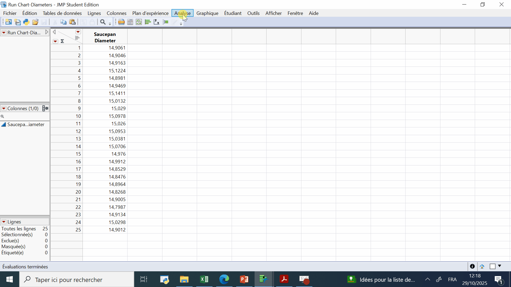

Procédure 13 · Chronologie
Construire une carte de suivi (run chart)
Procédure pas à pas
- Ouvrir Analyse → Qualité et procédés → Constructeur de cartes de contrôle.
- Affecter Diamètres à Y.
- Configurer le type de carte correspondant à une carte de suivi.
- Dans le graphique, utiliser les options Tests si elles sont disponibles.
Télécharger les données pour JMP
Ouvrir ce fichier dans JMP, puis suivre les étapes de la procédure et les animations associées.
↓ Télécharger Run Chart-Diameters.XLSFormat .XLS ; fichier d’exercice original, sans modification.
Jeu de données / résultat
Fichier cité : Run Chart-Diameters.xlsx
Point de vigilance : Le support ne décrit pas précisément le paramétrage nécessaire pour obtenir un run chart plutôt qu’une carte de contrôle.
Démonstrations animées dans JMP
Animations extraites du PowerPoint « Lean Six Sigma avec JMP 003 ». Elles complètent les étapes numérotées ci-dessus.
